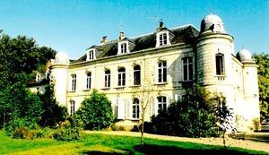
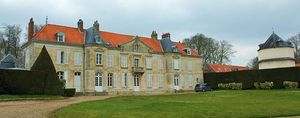

Recensement Jean-Claude Truffet
| Département | 80 — Somme |
| Canton | Ailly-sur-Somme |
| Commune | Belloy sur Somme |
| Type d'édifice | Château |
| Période d'origine | XVI-XVII |
| Coordonnées GPS | 49° 54' 22" Nord, 1° 54' 17" Est En Bas GPS : 49° 58' 11,76" Nord, 2° 8' 17,16" Est |


Deux châteaux dans cet article de Belloy, château d'En-Bas et château d'En-Haut BELLOY-Sur SOMME, il existe à Belloy-sur-Somme deux châteaux, le château d'en haut et le château d'En Bas. Le château d'en haut est situé à l'extrémité du village, en bordure de la route qui conduit à Vignacourt. Les 1ers seigneurs de Belloy que l'on connaisse en portaient le nom, ce n'est qu'à partir de la fin du XIIIe siècle que l'on commence à distinguer les seigneurs qui possédaient l'un ou l'autre des deux châteaux. Celui d'en bas, appelé château de la Motte, était sous la dépendance du château d'en haut. Cette situation dura plusieurs siècles puisque, en 1603 encore, lorsque la terre de la Motte fut acquise par la famille Picquet, elle se déclarait vassale du château d'en haut. A la fin du XVIe siècle, le château d'en Haut appartenait aux Monceaux, et en 1637, il appartenait à la famille Tiercelin de Brosses, dont une descendante, Angélique-Henriette-Marie Tiercelin, dame de Belloy et épouse de Louis-Henri, marquis de Pons, vendit en 1765, la seigneurie à Joseph-René Boistel. le château construit en pierre, mais plus petit que celui d'en Bas, fut très remanié au début du XIXe siècle. appartient à madame Renée Saint.
Éléments protégés MH : le pigeonnier en pans de bois et torchis : inscription par arrêté du 20 juillet 1966.
EN-BAS, entre la deuxième moitié du XVIIIe siècle et le premier quart du XIXe siècle, le château connut d'importantes modifications: agrandissement de la ferme, mise en place d'un avant-corps sur chaque façade du corps de logis du château. Au cours du XIXe siècle, d'autres aménagements radicaux sont entrepris tels l'édification de nouveaux bâtiments et de nombreux changements dans l'organisation du parc qui s'agrandit vers les marais entre 1833 et la fin du XIXe siècle. Le château visible aujourd'hui est le résultat des changements intervenus sur le domaine dans les années 1830. Le bâtiment est surmonté d'une toiture à croupes et possède quatre tourelles d'angle. La surélévation de la toiture détermine un étage supplémentaire surmonté d'une belle sculpture armoriée, oeuvre des frères Duthoit. Une remarquable chapelle, néo-classique, de style baroque italianisant, est également construite et le jardin est recomposé en un jardin irrégulier et paysager doté d'une serre chaude. Le système hydraulique de cette serre se trouve conservé, avec une installation de jardin, en rocaille ciment-faux-bois, à l'intérieur. Enfin, trois ponts ainsi qu'une grotte en rocaille viennent agrémenter la composition du parc.
Éléments protégés MH : le château ; les façades et les toitures, la chapelle et la ferme en totalité, la serre et toutes les fabriques, la maison du gardien, façades et toitures, le parc en totalité, avec ses allées, son réseau hydraulique, ses ponts et ses rocailles: inscription par arrêté du 18 mars 2009. La chapelle et la serre chaude : classement par arrêté du 4 février 2011, modifié par arrêté du 18 octobre 2011.
famille Tiercelin de Brosses"
Deux châteaux dans cet article de Belloy, chat d'En-Bas grav-1 et chat d'En-Haut grav-2 GPS : 49° 54' 22" Nord, 1° 54' 17" Est En Bas GPS : 49° 58' 11,76" Nord, 2° 8' 17,16" Est